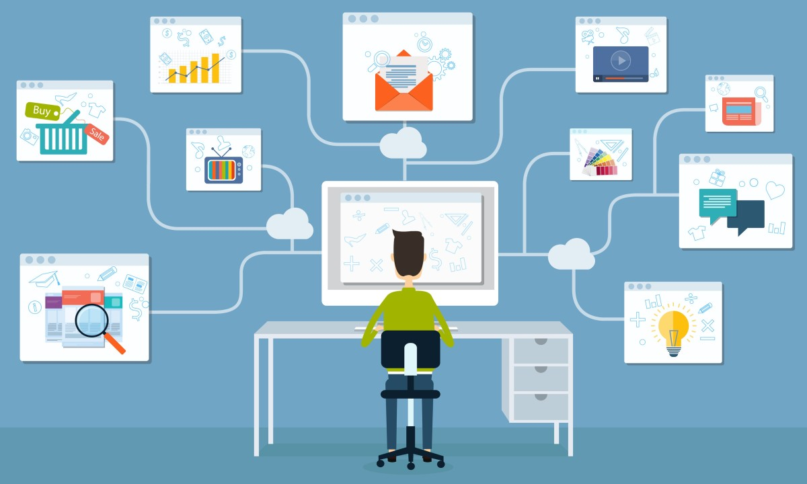

The recent scare of a global pandemic has shaken the world to its core. Global healthcare system and economy
has been strongly disrupted since the Covid-19 pandemic began. Despite the current crisis being a healthcare
issue, the education system continues to reel under the negative impact of Covid-19. According to UNESCO,
since the outbreak of COVID-19 began, some 1.37 billion students in 138 countries worldwide have been affected
by school and university closures. Nearly 60.2 million school teachers and university lecturers are no longer
in the classroom. Further, most of the governments around the world have temporarily closed the educational
institutions to contain the spread of infection. The UNESCO estimates that about 32 crores students are
affected in India, including those in schools and colleges.
To facilitate the continuity of education, the governments have come up with remote learning programs.
Teachers and students enter a new world of virtual lectures. Though E-learning is not a new phenomenon, the
outbreak of Covid-19 and the country going under lockdown shifted the whole education system into a new
virtual mode.
Nevertheless, Covid-19 has prompted experts to rethink the conventional mode of education. Digital education
appears to be a viable solution to fill in the void for classroom education for a period while minimizing the
chances of any infection to students until classes resume. Students and teachers are setting up accounts on
online platforms like Google meet, zoom, skype, Google classroom. Technology has brought a new digital
revolution which has led to remarkable changes in how the content is accessed, consumed, discussed, and
shared. Some institutions have decided to upload the videos on YouTube and some institutions have decided to
conduct the live classes through zoom app and google classroom. One of the major benefits of YouTube videos
is, depending upon the availability anyone can access the online classes. Another benefit of learning online
is that it makes sure that you are in synchronization with modern learners. This enables the learner to access
updated content whenever they want it. However, the live classes have turned out to be more preferable
solution for the education system because of the face to face interaction like the class room teaching. The
virtual class room feeling and the interaction session avoids the void that the students face while watching a
recorded video. Yet we are unable to say how effective this system is as every student are not tuning in.
People living in urban area don’t find it difficult to signup to online platforms but students and teachers of
rural area do not have the infrastructure to opt for distance learning. And for government to set
infrastructure to facilitate the resources, it will cost a huge budget which appears to be difficult due to
the hit to economy. E-learning requires continuous power and internet connectivity which is impossible in most
of the tier-2 and tie-3 cities in India. Further, online classes come with a major drawback that a student or
a teacher faces that is the lack of atmosphere. Unlike a traditional classroom, online classes mostly take
place at home. Most of the time external disturbances loosen the grip of concentration. As the whole education
system is now entering to the digital era, many teachers are facing difficulties over switching to the online
mode. Lack of expertise and knowledge sometimes bring unwanted hindrances like from setting up an account to
invite students to join the classes. E-learning comes with online materials. Students often find it difficult
to scroll through a lot of pages to arrive at the desired information. Digital learning has limitation as
compared to handy materials. Moreover, the huge amount of information sometimes misguides the students. often
the source and reliability of the information is questionable. Besides that the recent swelling of data
breaching stands as a major threat to the users of online platforms. Educational data circulated in online
should be properly maintained. Because ultimately these digital educational course classes will also lead to
hacking systems and intruders coming in. The digital safety challenge will remain at large while imparting
education.
Since the pandemic, many parents stopped private coaching classes of their ward. Thus, many private teachers
are in deep financial crisis. As many ed-tech companies are showing up with a great discount on their products
and various attractive marketing schemes, both parents and students are turning their head away from private
tutors. The pandemic has forced almost all offices and institutions in the country to cut their budget. In
such scenario, schools to appoint new teachers is a far-fetched solution for the private tutors’ problem.
The confusion over conducting exams have spurred little controversies now a days. Exams are considered to be
the ultimate evaluation of a student over his hold on subjects. The unexpected lockdown had forced students to
attend class at home instead of going to college. But at the same time the lockdown somehow affected the
students and teachers to complete their syllabus. No matter how frequently classes are being held, the
completion of the syllabus seems impossible in most of the institutions. When institutions asked students to
go through exams, they faced outrages. The recent decision by UGC is still opposed by a number of states
government. Yet, some institutions have come up with an innovate way of conducting exams, the open book way.
Which again faced a lot of controversies. Some institutions have set difficult questions even some of the
answers cannot be retrieved from the book. Some institutions adopted an average marking system and cancelled
the exams. We have to find a strong alternative for this.
In the case of India, we still have a long way to go before digital learning is seen as mainstream education.
Looking at the current situation, we can do nothing but go with the flow and try to avoid the adverse effects.
We have to gain knowledge the best way possible. Digital platforms are expected to be more evolved and we are
expected not to completely forget the digital platforms once the pandemic meets its end.
Saiprasad Mohapatra
References: The Economic Times, unesco.org, latestlaws.com